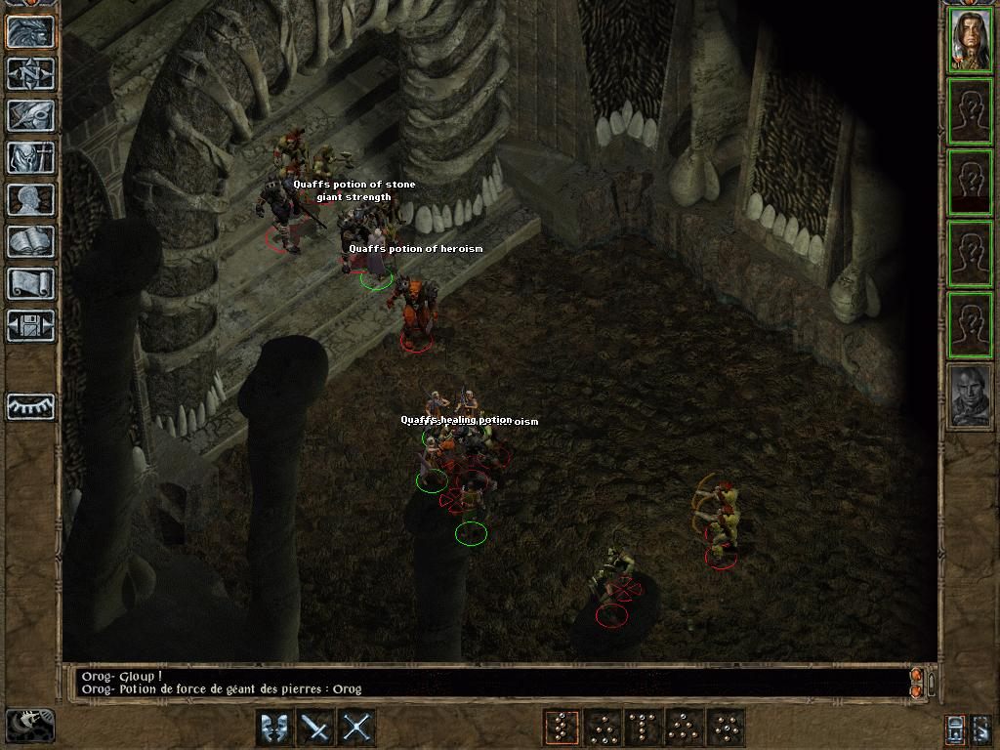

Introduction
Courte description du mod : Ce mod...... ou L'objet de ce mod......
Il s'agit d'un modèle de fichier readme destiné aux mods développés et/ou publiés sur la Couronne de Cuivre. Je me suis efforcé de conserver les codes couleurs utilisés par le forum, même si ce n'est pas toujours évident.
Pour chaque section, j'ai repris, chaque fois que c'était possible, des éléments de traductions déjà publiées (par les d'Oghms ou par bibi) afin de conserver un semblant d'homogénéité dans les termes employés. Il suffit alors de conserver celles dont on a besoin (liste des jeux compatibles, procédures d'installation selon la plateforme, liste des outils utilisés...) et, pour le reste, de remplacer MYMOD et Auteur par le nom du mod et de son auteur, de modifier les liens et de remplir les textes adéquats. Pour certaines sections, j'ai été le plus exhaustif possible : il vous suffit de choisir les paragraphes qui vous intéressent et de supprimer les autres. 😉
Codes de caractères spéciaux : mid dot [·] - > [>] - espace insécable [ ] - - ⁂
Codes de smileys : 🙂 [:)] - 😉 [;)] - 😝 [:p] - 😎 [] - ⚠ et ⚠ [:warning:] - ⚠️ ou ⚠️ [warning en jaune]
Codes de listes supplémentaires :
- □ carré vide
- ⬨ diamant vide
- ⬦ petit losange vide
- ◇ losange moyen vide
- ▷ demi-flèche vide
- • rond plein de séparation
- ⬧ diamant plein
- ⬥ petit losange plein
- ◆ losange moyen plein
- ▶ demi-flèche pleine
- ► demi-flèche élancée pleine
Titre (h3)
Titre (h4)
Titre (h5)
Titre (h6)
• BACK TO TOP
Compatibility
This mod is designed to work on all Infinity Engine games. This includes
- The series of Enhanced Editions published by Beamdog, which at present includes Baldur's Gate: Enhanced Edition (BGEE), Baldur's Gate II: Enhanced Edition (BG2EE), Icewind Dale: Enhanced Edition (IWDEE), and Planescape: Torment: Enhanced Edition (PsTEE). The BGEE Siege of Dragonspear expansion (SoD) is supported as well. All of the Enhanced Edition games include the original expansion packs, e.g. IWDEE includes Heart of Winter and Trials of the Luremaster.
- The original Baldur's Gate (BG), with or without the Tales of the Sword Coast (TotSC) expansion.
- The original Baldur's Gate II (BG2, or just SoA), with or without the Throne of Bhaal (ToB) expansion.
- The conversion projects Baldur's Gate Trilogy (BGT), Baldur's Gate Tutu (Tutu), Icewind Dale-in-Baldur's Gate II (IWD-in-BG2), and Enhanced Edition Trilogy (EET).
- The original Icewind Dale (IWD) with or without either of its expansions, Heart of Winter (HoW) and Trials of the Luremaster (TotLM).
- Icewind Dale II (IWD2).
- Planescape: Torment (PsT).
MYMOD is a WeiDU mod, and therefore should be compatible with all WeiDU mods. [facultatif : It has been tested on several different installations, and has so far worked perfectly.] However, we cannot test every single one. [Choisir une formule parmi les suivantes :] If you do encounter any bugs, please contact AUTEUR or alternatively post on the forums. If you encounter any bugs, please report them on the forum!
Though I am striving to make MYMOD compatible with as many other mods as possible, there is always a chance that incompatibilities will arise. Below are the ones discovered thus far:
[Choisir une formule parmi les suivantes : ]Although it is not required for MYMOD to function properly, it is always a good idea install the latest version of the BG2 Fixpack. You are strongly recommended to also download and install the BG2 Fixpack before proceeding with the installation of this mod.
• BACK TO TOP
Installation
Notes
If you've previously installed the mod, remove it before extracting the new version. To do this, run setup-mymod.exe (or .command with OS X), uninstall all previously installed components and delete the mymod folder.
When installing or uninstalling, do not close the DOS window by clicking on the X button! Instead, press the Enter key whenever instructed to do so.
Disable any antivirus or other memory-resident software before installing this or any other mod. Some (particularly avast and Norton!) have a tendency to report false positives with mod activity, resulting in failed installs.
Special Note for Siege of Dragonspear from Steam/GOG
Good Old Games (GOG) and Steam both package the additional content for Siege of Dragonspear in a method that WeiDU, the tool used to install this mod, cannot access. You must run a program called Modmerge on your SoD installation before you can install this or any other WeiDU-based mod.
Enhanced Editions Note
The Enhanced Editions are actively supported games. Please note that every patch update will wipe your current mod setup! If in the middle of a modded game you might want to delay the patch update (if possible) as even after reinstalling the mods, you might not be able to continue with your old savegames. Alternatively, copy the whole game's folder into a new one that can be modded and will stay untouched by game patches. It is important that you install the mod to the language version you are playing the game in. Otherwise, the dialogues of the mod will not show but give error messages.
⚠️ Warning: installation process
Variables needed for installation are read from mymod-config-default.ini file, or mymod-config.ini if it exists.
As interrupting installation with plain text prompts allowing players to customise components to their liking, those variables have been moved into mymod-config-default.ini file in mymod folder. This file provides a 'standard' installation.
If you want to define your own customized installation, you have to modify the variables involved in mymod-config-default.ini, then save this file as mymod-config.ini.
The installation process will read both ini files and prioritize user values. If a value is not set or mismatched in mymod-config.ini, any installation failure will be prevented by reverting it back to its default value.
Please read the mymod-config-language.txt file (with 'language' being the installation language you chose) to check the variables names and their meanings. Here is a chart listing the variables related to the installation process:
| Variables |
Signification |
Type |
Scope values |
Default value |
| mymod_variable1 |
defines blabla |
integer |
1 or 2 |
1 |
| mymod_variable2 |
defines blabla |
integer |
1, 2, 3 or 4 |
2 |
| mymod_variable3 |
defines blabla |
string |
one character: A, B or C |
A |
| mymod_variable4 |
The name of your mount |
string |
a name! |
Silver Star |
Windows
MYMOD for Windows is distributed as an extractable compressed archive and includes a WeiDU installer.
Extract the contents of the mod archive into the folder of the game you wish to modify, using 7zip, WinRAR, or another file compression utility that handles .zip files. When properly extracted, your game directory will contain setup-mymod.exe and the folder mymod. To install, double-click setup-mymod.exe and follow the instructions on screen.
You can run setup-mymod.exe in your game folder to reinstall, uninstall or otherwise change components.
[(Pour une version exe, remplacez les 2 deux premières lignes par les suivantes :)MYMOD for Windows is distributed as a self-extracting archive and includes a WeiDU installer. To install, simply double-click the archive and follow the instructions on screen.
Alternatively, the files can be extracted into your game directory using 7zip or WinRAR. When properly extracted, your game directory will contain setup-mymod.exe and the folder mymod. To install, double-click setup-mymod.exe and follow the instructions on screen.]
Mac OS X
MYMOD for Mac OS X is distributed as a compressed tarball and includes a WeiDU installer.
First, extract the files from the tarball into your game directory. When properly extracted, your game directory will contain setup-mymod, setup-mymod.command, and the foldermymod. To install, double-click setup-mymod.command and follow the instructions on screen.
You can run setup-mymod.command in your game folder to reinstall, uninstall or otherwise change components.
Linux
MYMOD for Linux is distributed as a compressed tarball and does not include a WeiDU installer.
Extract the contents of the mod to the folder of the game you wish to modify.
Download the latest version of WeiDU for Linux from WeiDU.org and copy WeiDU and WeInstall to /usr/bin. Following that, open a terminal, cd to your game installation directory, run tolower and answer 'Y' to both queries. You can avoid running the second option (linux.ini) if you've already ran it once in the same directory. To save time, the archive is already tolowered, so there's no need to run the first option (lowercasing file names) either if you've extracted only this mod since the last time you lowercased file names. If you're unsure, running tolower and choosing both options is the safe bet.
To install, run WeInstall setup-mymod in your game folder. Then run wine BGMain.exe and start playing.
Note for Complete Uninstallation
In addition to the methods above for removing individual components, you can completely uninstall the mod using setup-mymod --uninstall at the command line to remove all components without wading through prompts.
• BACK TO TOP
Components
The installer includes the following components. The number of each is the component DESIGNATED number which gives it a fixed install position, lets other components and mods detect it and allows automated installers like the BiG World Setup specify component choices.
10 Component 1 : blabbla
Description du composant 1.
20 Component 2 : blabbla
Description du composant 2
30 Component 3 : blabbla
Exemple de composant présentant des tableaux.
| Créature |
Kit |
Niveau (ex) |
XP (ex) |
PV (ex) |
Force (ex) |
Constitution (ex) |
Compétence martiale |
| Tazok |
Barbare |
19 (18) |
12000 (6000) |
154 (136) |
-- |
-- |
2HS ++ |
| FIRorc01 (DigDag) |
Berserker |
13 (12) |
7000 (2000) |
107 (99) |
22 (17) |
22 (9) |
BASTARD SWORD ++++ |
• BACK TO TOP
Troubleshooting and Bug Reporting
If you should encounter any bugs, please report them to the authors at the MYMOD forum. In addition, MYMOD is available on GitHub, so fixes and changes can be submitted by the community.
These are some general tips if you have problems getting the game working, with or without this or other mods. Many times, errors have to do with the game engine itself or the manner of installation or gameplay. The game recommends deleting all files out of the /cache, /temp and /tempsave subfolders in your game folder to see if that resolves the problem before any further troubleshooting.
Symptom: Game freezes or crashes to desktop (CTDs)
Sometimes the game displays an 'assertion error' in a pop-up window when this happens, but often times it doesn't. To enable the full error message, open the file baldur.ini in your game folder with a text editor (such as Notepad). If you find you can't edit it or save changes in Windows Vista or 7, see this topic for assistance.
Under the [Program Options] section in the file, type Logging On=1 (unless it's already there). While you're there, you may also want to make sure Debug Mode=1 is there to enable the CLUA Console for debugging and testing. Save the file and exit. Now go back into the game and try to reproduce the crash. Then look in your game folder again for the Baldur.err file and open it with a text editor to analyse its contents.
Symptom:
ERROR: error copying [infinityanimations/content/somefile.bam]
ERROR: [SOMEFILE.CRE] -> [override/SOMEFILE.CRE] Patching failed (COPY)
Stopping installation because of error.
(with no other error message)
Less-than-informative messages like these may indicate you're installing to a hard drive with a low data transfer rate or an antivirus program is active during installation (which can also affect data transfer). Try installing to an internal drive with antivirus protection disabled during the install. If unsure, disconnect from the Internet (either unplug your network cable or disable your wireless adaptor) and turn off all memory-resident programs during the install. To get a list of these, go to Start > Run and type msconfig where it says "Open:" then click OK. When the System Configuration Utility appears, click on the Startup tab. The only really necessary programs that need to be loaded in memory at startup are those related to your graphics chip (typically ATI or NVIDIA). Uncheck everything else, reboot and try installing the mod again. There are well-documented issues with installing mods while Avast antivirus is running, so make absolutely sure all components of Avast are completely disabled.
Other issues
If you have more than one large mod installed, please refer to the Megamod FAQ for more troubleshooting tips.
If none of this resolves your issue, or you have mod-specific issues, please report the problem in the mod's forum. Include the contents of your WeiDU.log file in the post, or attach it if it's large.
• BACK TO TOP
Screenshots
Exemples de fichiers images que l'on peut afficher (tirés du mod BuTcHeRy).
 Image centrée.
Image centrée.
Image non centrée.
• BACK TO TOP
Credits and Acknowledgements
Special Acknowledgements to:
Programs/tools used in creation:
-
WeiDU, by Wes Weimer, the bigg and Wisp.
-
Near Infinity, by Jon Olav Hauglid, FredSRichardson, and Argent77.
-
Infinity Explorer, by Dmitry Jemerov / bigmoshi.
-
DLTCEP, by Avenger.
-
CreMaker_v3.1.9.
-
IESDP, maintained by igi and lynx.
-
G3 Debugging Suite, by CamDawg.
-
BAM Workshop, by Glenn Flansburg.
-
BAMWorkshop 2, by Andrew Bridges.
-
BAM Batcher, by Miloch.
-
Adobe Photoshop
-
GIMP, by the GIMP team.
-
GIF Movie Gear
-
Blender, by the Blender Foundation.
-
3ds Max
-
Notepad++, by the Notepad++ team, Don Ho, and the spellcheck plug-in.
-
WeiDU Notepad++ Highlighters , by Argent77.
-
ConTEXT Text Editor, by Eden Kirin.
-
WeiDU ConTEXT Highlighters , by Idobek, updated by cmorgan.
-
EditPad Classic, by Jan Goyvaerts.
-
PSPad, by Jan Fiala.
-
Bulk Rename Utility, by TGRMN Software.
Copyrights Information
Libre à vous de choisir la formule et la présentation qui vous conviennent :
MYMOD is not developed, supported, or endorsed by BioWare™ or Interplay/BlackIsle, Overhaul, Beamdog or the Wizards of the Coast. It was developed by AUTEUR, based on material from the game Baldur's Gate II and its expansion.
All mod content is ©AUTEUR.
Baldur's Gate II: Shadows of Amn and Baldur's Gate II: Throne of Bhaal © TSR, Inc. The BioWare Infinity Engine is © BioWare Corp. All other trademarks and copyrights are property of their respective owners.
This mod was created to be freely enjoyed by all Baldur's Gate II players, and its content is free of rights. However, it should not be sold, published, compiled or redistributed in any form without the consent of the author.
Please note that any and all redistribution and/or hosting of this mod is prohibited without permission from the author.
If there are any copyright issues or this statement needs revision, then please contact me and advise me what to do about it. Most notably, if you see any artwork in this mod that might conflict with Copyright rules, please let me know as soon as possible, and I will remove the conflicting content immediately.
MYMOD is not developed, supported, or endorsed by BioWare™ or Interplay/BlackIsle, Overhaul, Beamdog or the Wizards of the Coast. It was developed by AUTEUR, based on material from the game Baldur's Gate II and its expansion.
All mod content is ©AUTHOR.
Baldur's Gate II: Shadows of Amn and Baldur's Gate II: Throne of Bhaal © TSR, Inc. The BioWare Infinity Engine is © BioWare Corp. All other trademarks and copyrights are property of their respective owners.
This mod was created to be freely enjoyed by all Baldur's Gate II players, and its content is free of rights. However, it should not be sold, published, compiled or redistributed in any form without the consent of the author.
Please note that any and all redistribution and/or hosting of this mod is prohibited without permission from the author.
If there are any copyright issues or this statement needs revision, then please contact me and advise me what to do about it. Most notably, if you see any artwork in this mod that might conflict with Copyright rules, please let me know as soon as possible, and I will remove the conflicting content immediately.
The modding community for the Infinity Engine has been going strong for more than 10 years now, and is the culmination of thousands of unpaid modding hours by fellow fans of the game. Modders produce their best work and players get the best, well-supported mods when we all work together.
There are two big ways to upset this harmony. One is to claim someone else's work as your own. The second is to host and redistribute a mod without permission from the author(s).
Be kind to your fellow players and modders. Don't do either.
• BACK TO TOP
Version History
Version 3 - date
- modification niveau 1
- modification niveau 2
- modification niveau 3
- modification niveau 4 standard
- modification niveau 3
- modification niveau 4 forcée
- modification niveau 3
- □ modification niveau 4 personnalisée : carré vide
- ⬨ modification niveau 4 personnalisée : diamant vide
- ⬦ modification niveau 4 personnalisée : petit losange vide
- ◇ modification niveau 4 personnalisée : losange moyen vide
- ▷ modification niveau 4 personnalisée : demi-flèche vide
- • modification niveau 4 personnalisée : rond plein de séparation
- ⬧ modification niveau 4 personnalisée : diamant plein
- ⬥ modification niveau 4 personnalisée : petit losange plein
- ◆ modification niveau 4 personnalisée : losange moyen plein
- ▶ modification niveau 4 personnalisée : demi-flèche pleine
- ► modification niveau 4 personnalisée : demi-flèche élancée pleine
- modification niveau 2
- Updated installer WeiDU to v246.
Version 2 - date
Version 1 - date (format : Mois jour, année)
• BACK TO TOP